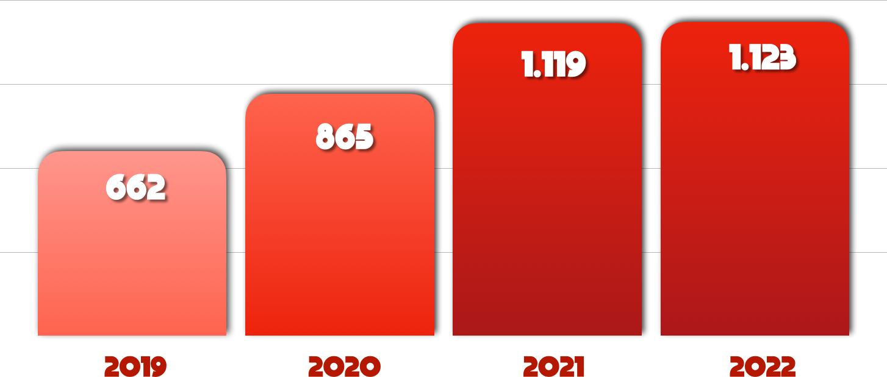

Sobre Nós
A PORTO FINO EMPREENDIMENTOS, sediada na cidade de Simões Filho, iniciou suas operações em 2005 e desde então vem criando laços de parceria em toda a Bahia, sempre focada em expandir ainda mais seus horizontes.
Em 2008 focou seus esforços para o segmento da terceirização e desde então vem firmando-se cada vez mais como uma das principais prestadoras de serviços na execução dos serviços de conservação, manutenção, operação nos sistemas de abastecimentos de água e esgotamento sanitário.
Com capital de giro próprio e uma equipe experiente e reconhecida no segmento, a PORTO FINO garante a qualidade de seus serviços.
Visando a satisfação de seus clientes, a PORTO FINO sempre estará em busca contínua de melhorar ainda mais seu Sistema de Gestão Integrada, que engloba diversos aspectos como Qualidade, Meio Ambiente, Segurança, Tecnologia e Responsabilidade Social.
Uma Nova Conquista a Cada Ano
Com investimento em tecnologia e pessoal, a PORTO FINO conquista e consolida-se no mercado através de um trabalho qualificado e reconhecido, percebendo-se na crescente evolução do seu número de COLABORADORES.

Missão
Ser a melhor parceira na prestação de serviços, oferecendo bons resultados, qualidade e excelência aos nossos clientes.
Visão
Tornar-se referência no fornecimento e gestão de recursos humanos para terceiros.
Valores
- Garantir a satisfação dos nossos clientes com a prestação de serviços;
- Ética e respeito na relação com os clientes e colaboradores;
- Busca contínua para melhorar ainda mais o Sistema de Gestão Integrada;
- Trabalho em equipe.
Áreas de Atuação
SERVIÇOS ADMINISTRATIVOS E COMERCIAIS
Serviços de apoio administrativo, leitura e entrega simultânea de contas, serviços de cobrança e notificação de débito.
SERVIÇOS DE MANUTENÇÃO DE REDES E RAMAIS - ÁGUA
Correção de vazamento em redes e ramais, manutenção de registros, ligação nova, instalação e substituição de hidrômetros, supressão e religação, coleta de amostras de água.
SERVIÇOS DE MANUTENÇÃO DE REDES E RAMAIS - ESGOTO
Desobstrução de redes e ramais, conserto e montagem de caixas e pv's, conserto de ramal, interceptor, coletor e linhas de recalque, coleta de amostras de esgoto, limpeza de grades.
SERVIÇOS DE OPERAÇÃO
Operação de estação de tratamento de água e esgoto, operação de barragens e captações, serviços de portaria 24h.
SERVIÇOS DE MANUTENÇÃO PREDIAL
Serviços de limpeza e conservação predial, jardinagem e manutenção em geral.